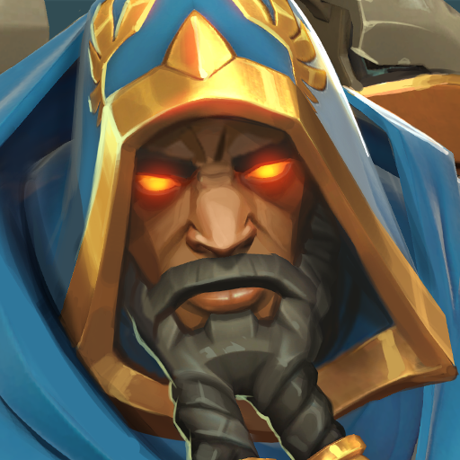
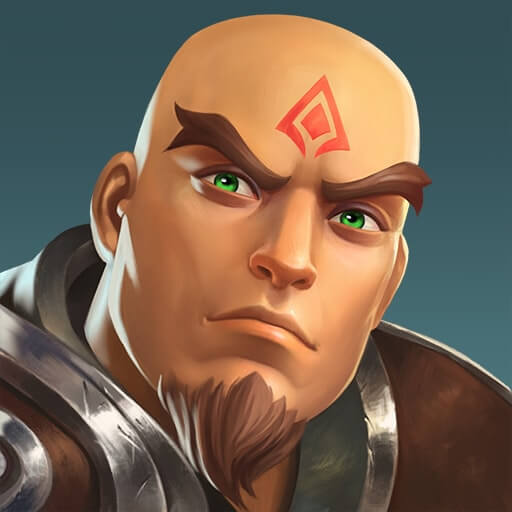
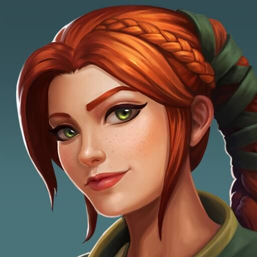
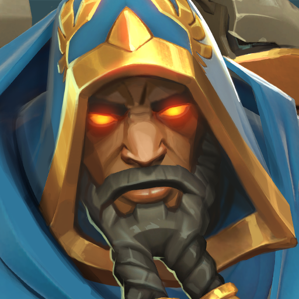
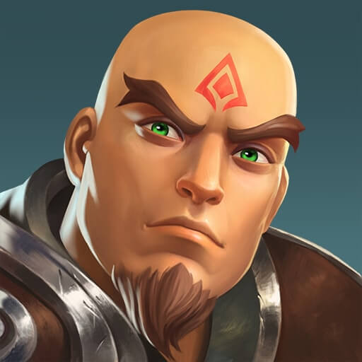
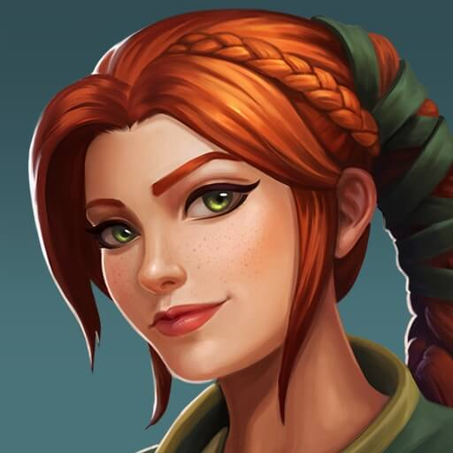
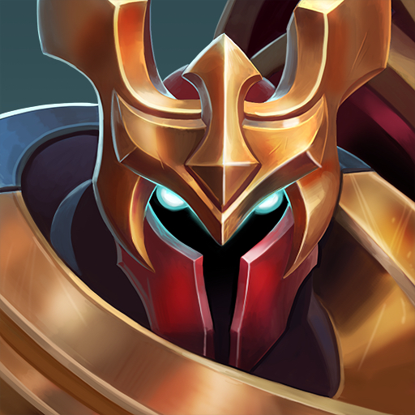
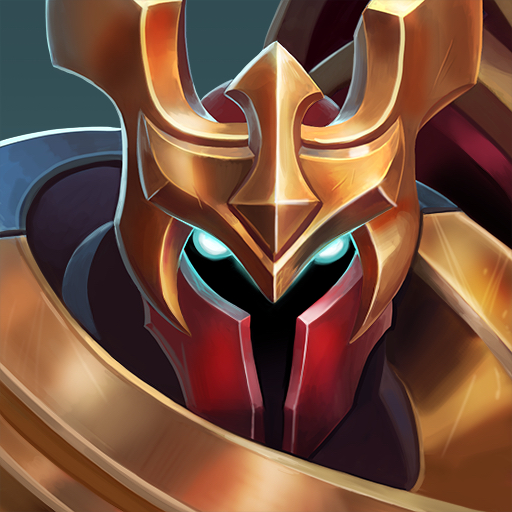
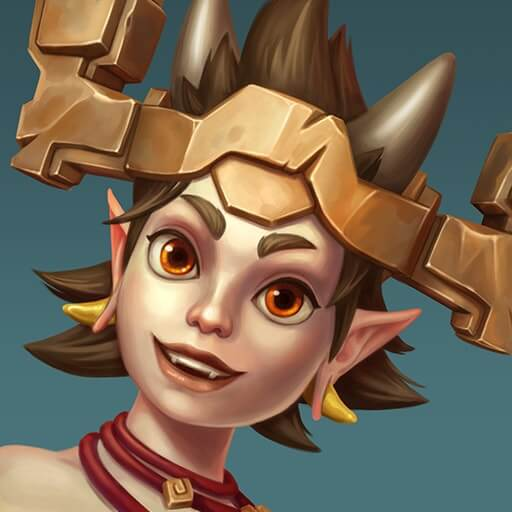
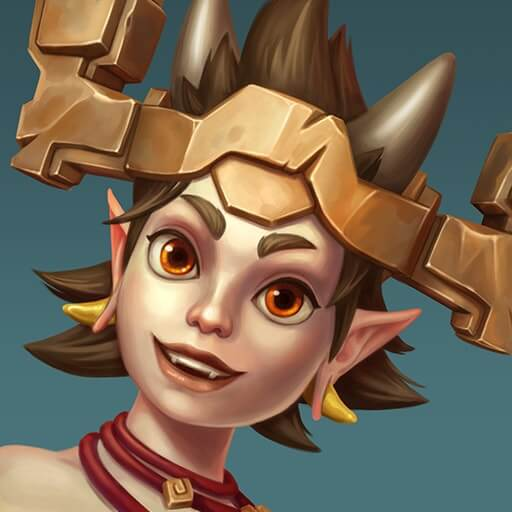

Paladins
¿Que es Paladins?
Paladins es un shooter Free to play en primera persona por equipos, creado por Hi-Rez Studio. El juego tiene un estilo de fantasía futurista, presentando una gama de campeones, cada uno con una personalidad propia y habilidades únicas, las cuales pueden ser mejoradas mediante un sistema de cartas que permite optimizarlas y así poder aprovechar mejor tus habilidades durante la partida.
Ademas de una tienda de items en cada partida, para aprovechar a cada campeón.
Origen
En el 2014 Hi-Rez anunció estar trabajando un nuevo juego que sería el sucesor de global agenda (otro juego de la compañía) ,aproximadamente un año después , el 4 de agosto del 2015 , comenzaron las inscripciones para participar en una beta cerrada después de estar en alpha por 2 meses, posteriormente en la TwitchCon 2015 se anunció que el juego seria lanzado como beta abierta pero esto fue retrasado hasta 16 de septiembre de 2016, como un producto de acceso anticipado de Evil Mojo Games. La beta cerrada comenzó el 17 de noviembre de 2015.El juego entró en beta abierta el 16 de septiembre de 2016.El 6 de mayo del 2017 se lanzó la beta abierta para las plataformas de PS4 y Xbox One. En septiembre de 2017 se anunció que el juego había alcanzado más de 15 millones de jugadores.El 1 de mayo de 2018 se anunció que el juego saldría oficialmente el 8 de mayo del mismo año, para PlayStation 4, Xbox One, Microsoft Windows y Mac.El juego fue lanzado en Nintendo Switch el 12 de junio de 2018.
Actualmente, el juego tiene Crossplay (Juego cruzado) con todas las plataformas, además, hay opción de jugar solo con teclado y ratón, solo con mando y desactivarlo totalmente. Las opciones de solo teclado y ratón y solo mando significan que puedes jugar con todos los jugadores que usen dichos controles sin importar la plataforma, por ejemplo, si juegas en consola con un teclado y ratón te pondrán con los de ordenador y otros de consola que jueguen con los mismos controles. En el modo competitivo no afecta el Crossplay totalmente, ya que los de teclado y ratón no podrán nunca jugar con los de mando en este modo de juego. También, el juego tiene Crossprogression (Progresión cruzado) con solo PC, Xbox y Nintendo Switch, esto significa que puedes jugar con tu cuenta en todas estas plataformas sin perder nada, pero hay que vincular las cuentas antes en la página oficial de Hi-Rez.

Jugabilidad
Este juego posee un sistema de cartas y talentos originales del juego que sirven para potenciar las habilidades de los personajes.
Paladins ofrece varios personajes, llamados campeones, para que los jugadores puedan elegir durante las partidas multijugador. Cada uno de estos campeones se clasifica en una de las siguientes categorías: Primera Línea, Daño, Soporte y Flanco, siendo en equipo de 5 jugadores. Estos deben confiar en la estrategia, el conocimiento de los personajes, la coordinación y el trabajo en equipo para lograr la victoria. Un buen equipo tendrá una selección equilibrada de clases que se apoyarán mutuamente durante el juego.
La estructura recomendada para un equipo es la siguiente: 2 tanques, 1 daño, 1 flanco y 1 soporte.
Clases de Campeones:
Tanque: Campeones que sirven como la protección del equipo, sosteniendo al frente y protegiendo a sus aliados. Con capacidades de alta salud y de blindaje. Los campeones de Primera Línea se destacan en bloquear el ataque enemigo y romper las capturas del objetivo enemigo.
Daño: Campeones que poseen salidas de daño confiables y consistentes o potencial de daño de explosión gigante. Su daño, junto con capacidades de salud promedio y movilidad decente, hacen que los campeones de Daño sean ideales para tiroteos prolongados.
Soporte: Campeones con alta utilidad y habilidades curativas, la columna vertebral de cualquier equipo. Debido a sus capacidades curativas que mantienen a sus aliados en la lucha, los campeones de apoyo son aliados invaluables.
Flanco: Campeones que sobresalen al cruzar el campo de batalla y quedarse atrás de las líneas enemigas, eliminando objetivos clave vulnerables, usualmente soportes y daños. Mientras que la mayoría de los campeones del flanco son relativamente frágiles, teniendo las capacidades de salud más bajas que cualquier otro campeón, su movilidad excelente y auto sostenido les proporcionan los medios del escape y de la supervivencia.
Asedio:
Es el modo de juego "principal" de Paladins. Los equipos tienen la tarea de capturar primero el punto de captura central del mapa y, el equipo que tenga éxito, tendrá que empujar la carga explosiva que genere el punto de captura a la base enemiga. El otro equipo deberá evitar que la carga explosiva llegue hacia su base en un período de tiempo. Este modo se reproduce en un formato de 5 contra 5.
Matanza:
Dos equipos. Un punto de control. Captura y mantén el punto central. Mata a tus enemigos para mantenerlos fuera del punto y gana 5 puntos para tu equipo. Además, obtén 1 punto por segundo si tu equipo controla el punto.

Batalla a muerte:
Dos equipos de 5 jugadores se enfrentan con el objetivo de conseguir 40 bajas antes que el otro equipo.
Competitivo:
Para desbloquearlo se necesita tener al menos 14 campeones desbloqueados y tener una cuenta nivel 15. El modo competitivo sólo cuenta con el modo de juego Asedio. Sin embargo, al comienzo de la partida, los jugadores deben elegir a sus campeones uno por uno. El primer jugador prohíbe a un campeón. Entonces, un jugador del equipo opuesto prohíbe a otro campeón. Esto se repite una vez más con el fin de prohibir a 4 campeones en total. A continuación, 1 jugador del equipo opuesto elige a un campeón, después 2 jugador del otro equipo y esto continúa hasta que el último jugador (del equipo que se opone a la que tiene la primera selección) tiene un campeón. Esto desafía a los equipos a tratar de contrarrestarse mutuamente eligiendo específicamente a ciertos campeones.
Campeones
 







 



 
